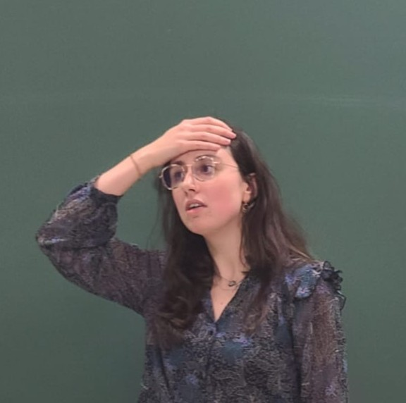

404 – Page Not Found
Sorry, the page you are looking for does not exist.
Go back to the homepage

Questions in a student meeting, Angers University (2024)
Picture by Mohamed Ag Aboubacrine Assadeck.